1. The Mass Spectrometer In order to measure the characteristics of individual molecules, a mass spectrometer converts them to ions so that they can be moved about and manipulated by external electric and magnetic fields. The three essential functions of a mass spectrometer, and the associated components, are:
1. A small sample is ionized, usually to cations by loss of an electron. The Ion Source 2. The ions are sorted and separated according to their mass and charge. The Mass Analyzer 3. The separated ions are then measured, and the results displayed on a chart. The Detector
Because ions are very reactive and short-lived, their formation and manipulation must be conducted in a vacuum. Atmospheric pressure is around 760 torr (mm of mercury). The pressure under which ions may be handled is roughly 10-5 to 10-8 torr (less than a billionth of an atmosphere). Each of the three tasks listed above may be accomplished in different ways. In one common procedure, ionization is effected by a high energy beam of electrons, and ion separation is achieved by accelerating and focusing the ions in a beam, which is then bent by an external magnetic field. The ions are then detected electronically and the resulting information is stored and analyzed in a computer. A mass spectrometer operating in this fashion is outlined in the following diagram. The heart of the spectrometer is the ion source. Here molecules of the sample (black dots) are bombarded by electrons (light blue lines) issuing from a heated filament. This is called an EI (electron-impact) source. Gases and volatile liquid samples are allowed to leak into the ion source from a reservoir (as shown). Non-volatile solids and liquids may be introduced directly. Cations formed by the electron bombardment (red dots) are pushed away by a charged repeller plate (anions are attracted to it), and accelerated toward other electrodes, having slits through which the ions pass as a beam. Some of these ions fragment into smaller cations and neutral fragments. A perpendicular magnetic field deflects the ion beam in an arc whose radius is proportional to the mass of each ion. Lighter ions are deflected more than heavier ions. By varying the strength of the magnetic field, ions of different mass can be focused progressively on a detector fixed at the end of a curved tube (also under a high vacuum).
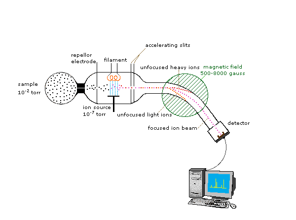
When a high energy electron collides with a molecule it often ionizes it by knocking away one of the molecular electrons (either bonding or non-bonding). This leaves behind a molecular ion (colored red in the following diagram). Residual energy from the collision may cause the molecular ion to fragment into neutral pieces (colored green) and smaller fragment ions (colored pink and orange). The molecular ion is a radical cation, but the fragment ions may either be radical cations (pink) or carbocations (orange), depending on the nature of the neutral fragment. An animated display of this ionization process will appear if you click on the ion source of the mass spectrometer diagram.
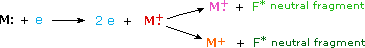
2. The Nature of Mass Spectra A mass spectrum will usually be presented as a vertical bar graph, in which each bar represents an ion having a specific mass-to-charge ratio (m/z) and the length of the bar indicates the relative abundance of the ion. The most intense ion is assigned an abundance of 100, and it is referred to as the base peak. Most of the ions formed in a mass spectrometer have a single charge, so the m/z value is equivalent to mass itself. Modern mass spectrometers easily distinguish (resolve) ions differing by only a single atomic mass unit (amu), and thus provide completely accurate values for the molecular mass of a compound. The highest-mass ion in a spectrum is normally considered to be the molecular ion, and lower-mass ions are fragments from the molecular ion, assuming the sample is a single pure compound. The following diagram displays the mass spectra of three simple gaseous compounds, carbon dioxide, propane and cyclopropane. The molecules of these compounds are similar in size, CO2 and C3H8 both have a nominal mass of 44 amu, and C3H6 has a mass of 42 amu. The molecular ion is the strongest ion in the spectra of CO2 and C3H6, and it is moderately strong in propane. The unit mass resolution is readily apparent in these spectra (note the separation of ions having m/z=39, 40, 41 and 42 in the cyclopropane spectrum). Even though these compounds are very similar in size, it is a simple matter to identify them from their individual mass spectra. By clicking on each spectrum in turn, a partial fragmentation analysis and peak assignment will be displayed. Even with simple compounds like these, it should be noted that it is rarely possible to explain the origin of all the fragment ions in a spectrum. Also, the structure of most fragment ions is seldom known with certainty.
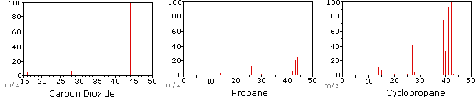
Since a molecule of carbon dioxide is composed of only three atoms, its mass spectrum is very simple. The molecular ion is also the base peak, and the only fragment ions are CO (m/z=28) and O (m/z=16). The molecular ion of propane also has m/z=44, but it is not the most abundant ion in the spectrum. Cleavage of a carbon-carbon bond gives methyl and ethyl fragments, one of which is a carbocation and the other a radical. Both distributions are observed, but the larger ethyl cation (m/z=29) is the most abundant, possibly because its size affords greater charge dispersal. A similar bond cleavage in cyclopropane does not give two fragments, so the molecular ion is stronger than in propane, and is in fact responsible for the the base peak. Loss of a hydrogen atom, either before or after ring opening, produces the stable allyl cation (m/z=41). The third strongest ion in the spectrum has m/z=39 (C3H3). Its structure is uncertain, but two possibilities are shown in the diagram. The small m/z=39 ion in propane and the absence of a m/z=29 ion in cyclopropane are particularly significant in distinguishing these hydrocarbons.
Most stable organic compounds have an even number of total electrons, reflecting the fact that electrons occupy atomic and molecular orbitals in pairs. When a single electron is removed from a molecule to give an ion, the total electron count becomes an odd number, and we refer to such ions as radical cations. The molecular ion in a mass spectrum is always a radical cation, but the fragment ions may either be even-electron cations or odd-electron radical cations, depending on the neutral fragment lost. The simplest and most common fragmentations are bond cleavages producing a neutral radical (odd number of electrons) and a cation having an even number of electrons. A less common fragmentation, in which an even-electron neutral fragment is lost, produces an odd-electron radical cation fragment ion. Fragment ions themselves may fragment further. As a rule, odd-electron ions may fragment either to odd or even-electron ions, but even-electron ions fragment only to other even-electron ions. The masses of molecular and fragment ions also reflect the electron count, depending on the number of nitrogen atoms in the species.
Ions with no nitrogenor an even # N atoms
odd-electron ionseven-number mass
even-electron ionsodd-number mass
Ions having anodd # N atoms
odd-electron ionsodd-number mass
even-electron ionseven-number mass
This distinction is illustrated nicely by the following two examples. The unsaturated ketone, 4-methyl-3-pentene-2-one, on the left has no nitrogen so the mass of the molecular ion (m/z = 98) is an even number. Most of the fragment ions have odd-numbered masses, and therefore are even-electron cations. Diethylmethylamine, on the other hand, has one nitrogen and its molecular mass (m/z = 87) is an odd number. A majority of the fragment ions have even-numbered masses (ions at m/z = 30, 42, 56 & 58 are not labeled), and are even-electron nitrogen cations. The weak even -electron ions at m/z=15 and 29 are due to methyl and ethyl cations (no nitrogen atoms). The fragmentations leading to the chief fragment ions will be displayed by clicking on the appropriate spectrum. Repeated clicks will cycle the display.
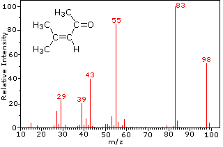
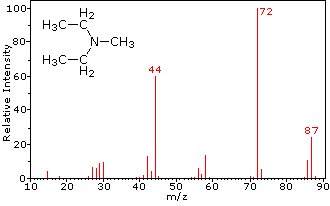
4-methyl-3-pentene-2-one
N,N-diethylmethylamine
When non-bonded electron pairs are present in a molecule (e.g. on N or O), fragmentation pathways may sometimes be explained by assuming the missing electron is partially localized on that atom. A few such mechanisms are shown above. Bond cleavage generates a radical and a cation, and both fragments often share these roles, albeit unequally.
3. Isotopes Since a mass spectrometer separates and detects ions of slightly different masses, it easily distinguishes different isotopes of a given element. This is manifested most dramatically for compounds containing bromine and chlorine, as illustrated by the following examples. Since molecules of bromine have only two atoms, the spectrum on the left will come as a surprise if a single atomic mass of 80 amu is assumed for Br. The five peaks in this spectrum demonstrate clearly that natural bromine consists of a nearly 50:50 mixture of isotopes having atomic masses of 79 and 81 amu respectively. Thus, the bromine molecule may be composed of two 79Br atoms (mass 158 amu), two 81Br atoms (mass 162 amu) or the more probable combination of 79Br-81Br (mass 160 amu). Fragmentation of Br2 to a bromine cation then gives rise to equal sized ion peaks at 79 and 81 amu.
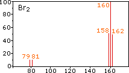
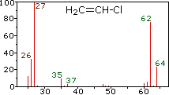
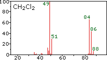
bromine
vinyl chloride
methylene chloride
The center and right hand spectra show that chlorine is also composed of two isotopes, the more abundant having a mass of 35 amu, and the minor isotope a mass 37 amu. The precise isotopic composition of chlorine and bromine is: Chlorine: 75.77% 35Cl and 24.23% 37Cl Bromine: 50.50% 79Br and 49.50% 81Br
The presence of chlorine or bromine in a molecule or ion is easily detected by noticing the intensity ratios of ions differing by 2 amu. In the case of methylene chloride, the molecular ion consists of three peaks at m/z=84, 86 & 88 amu, and their diminishing intensities may be calculated from the natural abundances given above. Loss of a chlorine atom gives two isotopic fragment ions at m/z=49 & 51amu, clearly incorporating a single chlorine atom. Fluorine and iodine, by contrast, are monoisotopic, having masses of 19 amu and 127 amu respectively. It should be noted that the presence of halogen atoms in a molecule or fragment ion does not change the odd-even mass rules given above.
To make use of a calculator that predicts the isotope clusters for different combinations of chlorine, bromine and other elements Click Here. This application was developed at Colby College.
Two other common elements having useful isotope signatures are carbon, 13C is 1.1% natural abundance, and sulfur, 33S and 34S are 0.76% and 4.22% natural abundance respectively. For example, the small m/z=99 amu peak in the spectrum of 4-methyl-3-pentene-2-one (above) is due to the presence of a single 13C atom in the molecular ion. Although less important in this respect, 15N and 18O also make small contributions to higher mass satellites of molecular ions incorporating these elements.
The calculator on the right may be used to calculate the isotope contributions to ion abundances 1 and 2 amu greater than the molecular ion (M). Simply enter an appropriate subscript number to the right of each symbol, leaving those elements not present blank, and press the "Calculate" button. The numbers displayed in the M+1 and M+2 boxes are relative to M being set at 100%.
4. Fragmentation Patterns The fragmentation of molecular ions into an assortment of fragment ions is a mixed blessing. The nature of the fragments often provides a clue to the molecular structure, but if the molecular ion has a lifetime of less than a few microseconds it will not survive long enough to be observed. Without a molecular ion peak as a reference, the difficulty of interpreting a mass spectrum increases markedly. Fortunately, most organic compounds give mass spectra that include a molecular ion, and those that do not often respond successfully to the use of milder ionization conditions. Among simple organic compounds, the most stable molecular ions are those from aromatic rings, other conjugated pi-electron systems and cycloalkanes. Alcohols, ethers and highly branched alkanes generally show the greatest tendency toward fragmentation.
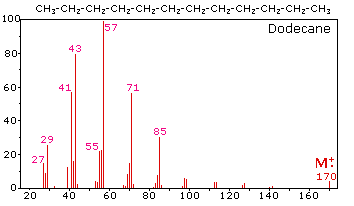
The mass spectrum of dodecane on the right illustrates the behavior of an unbranched alkane. Since there are no heteroatoms in this molecule, there are no non-bonding valence shell electrons. Consequently, the radical cation character of the molecular ion (m/z = 170) is delocalized over all the covalent bonds. Fragmentation of C-C bonds occurs because they are usually weaker than C-H bonds, and this produces a mixture of alkyl radicals and alkyl carbocations. The positive charge commonly resides on the smaller fragment, so we see a homologous series of hexyl (m/z = 85), pentyl (m/z = 71), butyl (m/z = 57), propyl (m/z = 43), ethyl (m/z = 29) and methyl (m/z = 15) cations. These are accompanied by a set of corresponding alkenyl carbocations (e.g. m/z = 55, 41 &27) formed by loss of 2 H. All of the significant fragment ions in this spectrum are even-electron ions. In most alkane spectra the propyl and butyl ions are the most abundant.
The presence of a functional group, particularly one having a heteroatom Y with non-bonding valence electrons (Y = N, O, S, X etc.), can dramatically alter the fragmentation pattern of a compound. This influence is thought to occur because of a "localization" of the radical cation component of the molecular ion on the heteroatom. After all, it is easier to remove (ionize) a non-bonding electron than one that is part of a covalent bond. By localizing the reactive moiety, certain fragmentation processes will be favored. These are summarized in the following diagram, where the green shaded box at the top displays examples of such "localized" molecular ions. The first two fragmentation paths lead to even-electron ions, and the elimination (path #3) gives an odd-electron ion. Note the use of different curved arrows to show single electron shifts compared with electron pair shifts.
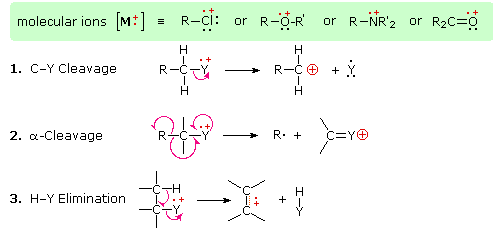
The charge distributions shown above are common, but for each cleavage process the charge may sometimes be carried by the other (neutral) species, and both fragment ions are observed. Of the three cleavage reactions described here, the alpha-cleavage is generally favored for nitrogen, oxygen and sulfur compounds. Indeed, in the previously displayed spectra of 4-methyl-3-pentene-2-one and N,N-diethylmethylamine the major fragment ions come from alpha-cleavages. Further examples of functional group influence on fragmentation are provided by a selection of compounds that may be examined by clicking the left button below. Useful tables of common fragment ions and neutral species may be viewed by clicking the right button.
Assorted Mass Spectra
View Fragment Tables
The complexity of fragmentation patterns has led to mass spectra being used as "fingerprints" for identifying compounds. Environmental pollutants, pesticide residues on food, and controlled substance identification are but a few examples of this application. Extremely small samples of an unknown substance (a microgram or less) are sufficient for such analysis. The following mass spectrum of cocaine demonstrates how a forensic laboratory might determine the nature of an unknown street drug. Even though extensive fragmentation has occurred, many of the more abundant ions (identified by magenta numbers) can be rationalized by the three mechanisms shown above. Plausible assignments may be seen by clicking on the spectrum, and it should be noted that all are even-electron ions. The m/z = 42 ion might be any or all of the following: C3H6, C2H2O or C2H4N. A precise assignment could be made from a high-resolution m/z value (next section).
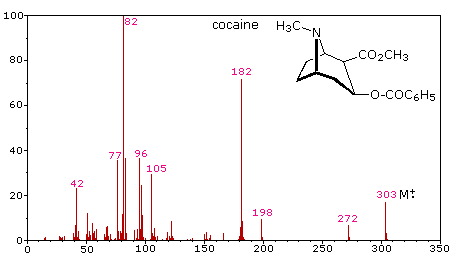
Odd-electron fragment ions are often formed by characteristic rearrangements in which stable neutral fragments are lost. Mechanisms for some of these rearrangements have been identified by following the course of isotopically labeled molecular ions. A few examples of these rearrangement mechanisms may be seen by clicking the following button.
Assorted Rearrangement Fragmentations
5. High Resolution Mass Spectrometry In assigning mass values to atoms and molecules, we have assumed integral values for isotopic masses. However, accurate measurements show that this is not strictly true. Because the strong nuclear forces that bind the components of an atomic nucleus together vary, the actual mass of a given isotope deviates from its nominal integer by a small but characteristic amount (remember E = mc2). Thus, relative to 12C at 12.0000, the isotopic mass of 16O is 15.9949 amu (not 16) and 14N is 14.0031 amu (not 14).
Formula
Mass
The mass calculator on the right may be used to calculate the exact mass of a molecule based on its elemental composition. Simply enter an appropriate subscript number to the right of each symbol, leaving those elements not present blank, and press the "Calculate" button. Only the mass of the most abundant isotope, relative to C (12.0000), is used for these calculations. For compounds of chlorine and bromine, increments of 1.997 and 1.998 respectively must be added for each halogen to arrive at the higher mass isotope values.
The following problems require an understanding of the principles of mass spectrometry. Most of the questions concern the identification of unknown compounds from their mass spectra.
Return to Table of Contents
This page is the property of The Edvibe Team. Comments, questions and errors should be sent to contact@edvibe.co.ke. These pages are provided to the IOCD to assist in capacity building in chemical education. 05/05/2013